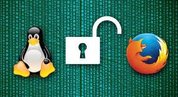

O que é um software?

Software são um conjunto de instruções e programas que indicam a um computador ou outro dispositivo eletrónico o que fazer e como executar tarefas. Ele é a parte não física de um sistema, sendo o "cérebro" que interage com o "corpo" (hardware) para que as máquinas funcionem e realizem ações, desde navegar na internet até jogar.
O que é um sistema operacional?

Um sistema operacional (SO) é um software fundamental que atua como um intermediário entre o hardware de um dispositivo (computadores, smartphones, etc.) e os aplicativos que o usuário utiliza. Ele gerencia os recursos do hardware (como processador, memória e dispositivos de entrada/saída), permite a execução de programas, cria uma interface para o utilizador interagir com o dispositivo e garante que todos os componentes funcionem em harmonia.
O que é uma licença de software?

Uma licença de software é um contrato legal entre o criador do software e o utilizador, que define as condições e permissões para usar, copiar, modificar e distribuir um programa. Esse contrato protege a propriedade intelectual do desenvolvedor e estabelece os limites de uso para o usuário, tornando o uso do software não licenciado ilegal e sujeito a penalidades.
O que é um Software livre?
Software livre é um software que garante quatro liberdades aos seus usuários: a liberdade de usá-lo para qualquer propósito, de estudá-lo e adaptá-lo às suas necessidades (acessando o código-fonte), de redistribuir cópias e de aperfeiçoar o programa e distribuir essas melhorias. Essa definição é baseada em liberdade, não em preço, podendo ser tanto gratuito quanto pago, e o acesso ao código-fonte é essencial para as liberdades de estudo e modificação.
O que é um Software Proprietário?
Um software proprietário é um programa que pertence a uma empresa ou indivíduo que detém os direitos exclusivos sobre o seu código-fonte e distribuição, restringindo o uso, a modificação e o compartilhamento pelo usuário final, que geralmente precisa pagar uma licença para utilizá-lo. Exemplos comuns incluem o sistema operacional Windows e os pacotes do Microsoft Office, cujos códigos-fonte são mantidos fechados e protegidos.
O que é um software de Sistema?
Um software de sistema é o software que controla e gerencia o hardware de um computador, permitindo que outros programas (softwares aplicativos) funcionem. Ele serve como uma plataforma entre o hardware e o usuário, fornecendo a interface necessária para que os utilizadores interajam com os componentes físicos e executem outras aplicações. O exemplo mais comum é o sistema operativo (SO), como o Windows, macOS ou Linux, que gerencia recursos como processador, memória e dispositivos de entrada/saída.
O que é um software Aplicativo?
Um software aplicativo, ou simplesmente aplicativo/app, é um programa de computador projetado para executar tarefas específicas para o usuário final, diferentemente do software de sistema, que é responsável por operar o próprio computador. Exemplos comuns incluem processadores de texto como o Microsoft Word, navegadores web como o Chrome, reprodutores de mídia e jogos eletrônicos, que facilitam atividades diárias, do trabalho ao entretenimento.
O que é um software de Programação?
Software de programação é um conjunto de ferramentas e programas que os desenvolvedores usam para criar outros softwares, como aplicativos, sistemas e websites. Ele inclui editores de código, compiladores (tradutores de linguagem) e ambientes integrados de desenvolvimento (IDEs) que facilitam a escrita, teste e depuração de código em diversas linguagens de programação, como Python, Java e C++.
O que é um software de diagnóstico de software ?
Um software de diagnóstico é uma ferramenta tecnológica projetada para identificar, analisar e resolver problemas em um sistema de software ou hardware, funcionando como um "check-up" para verificar o desempenho, a funcionalidade e a segurança de dispositivos e aplicativos. Ele integra dados de várias fontes, como testes de desempenho e análise de código, para fornecer uma visão abrangente do estado do sistema, possibilitando ações corretivas rápidas e precisas.
O que é um software de diagnóstico de hardware ?

Um software de diagnóstico de hardware é uma ferramenta que testa e analisa os componentes físicos de um computador para identificar e diagnosticar problemas, como falhas ou maus funcionamentos. Esses programas realizam testes em peças como processador, memória RAM, placa-mãe, disco rígido e placa gráfica, fornecendo informações detalhadas sobre seu desempenho e status operacional. A sua importância reside na capacidade de detectar falhas precocemente, o que permite ações corretivas antes que surjam problemas maiores, ajudando a prolongar a vida útil do equipamento e a garantir um sistema mais estável e produtivo.